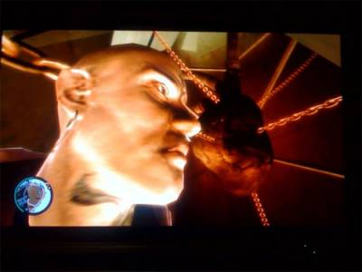
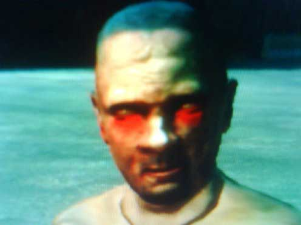
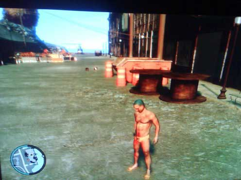
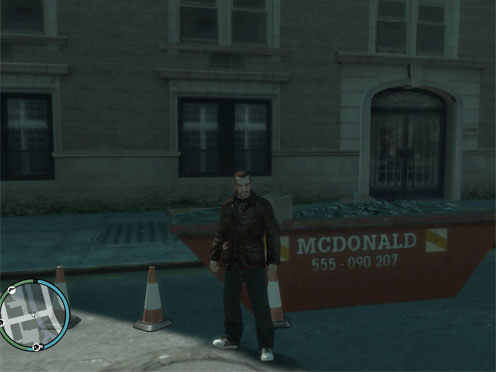
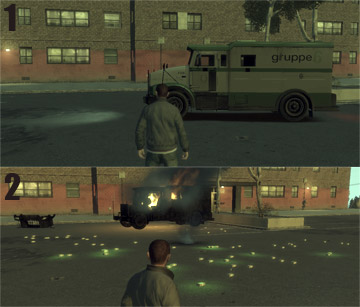
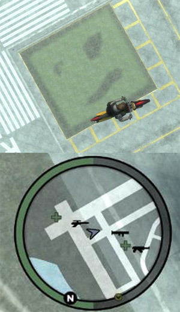
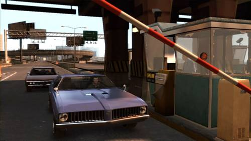

СЕРДЦЕ В GTA IV
Если хотите добраться до этой пасхалки, то можете посмотреть этот видео-гид
Такое вот брутальное и готичненькое, все в цепях, сердце.
Для тех, кто не имеет возможности посмотреть видео, сообщаю: берем вертолет и летим к Статуе Счастья. Там парим около площадки с четырьмя дверями. Прыгаем. На одной двери есть плакат «No Hidden Content Through Here» («Никакого Скрытого Контента Тут Нету»). Плакат врет
ПАСХАЛКИ МУЛЬТИПЛЕЕРНОГО РЕЖИМА
 Это похоже на знаменитое НЛО GTA San Andreas, но с единственным отличием - это правда. В мультиплеере GTA 4 игроки могут превращаться в зомби.
Согласно официальной документации, раздетыми могут только игроки максимального, 10-го, уровня. Но этот зомби (на изображении) имеет всего лишь второй. Говорят, что таким можно стать, если тебя убьет сотрудник Rockstar.
МУСОРКА McDonald
Контейнер со строительным мусором имени самой популярной сети быстрого питания в мире.
GRUPPE 6
По Либерти-Сити проезжают бронированные грузовики с надписью «Gruppe 6» на кузове. Машина не является полицейским фургоном для перевозки заключенных - зачем же тогда такая защита? Кто бы мог подумать, что это инкассаторская машина? Но как заполучить провозимые в ней деньги? Очень просто. Завладев таким грузовичком, заезжайте в укромное местечко и взрывайте его при помощи любой взрывчатки, например, гранаты. Броневик взорвется, а на его месте появятся огромные россыпи денег.
:/
В аэропорту, если подняться на достаточное расстояние над посадочной полосой, можно увидеть такой вот недовольный смайл.
ШАЛЬНЫЕ ДЕНЬГИ
По сути, кто такой НикоБеллик? Это «наш» человек, у которого на борту помимо мозга, как у всех рядовых американцев, есть еще и смекалка. Поэтому, ему легко было выжить в Либерти Сити.
Особенно, в финансовом плане.
Итак. Чтобы добыть отнять деньги у населения, идем к ближайшему торговому автомату. Затем делаем такую пробку, каких еще не было в GTA 4 (эге-гей!) и чтобы к области, где стоит автомат, не смогла бы пробиться санитарная машина.
Ждем, пока кто-нибудь не подойдет к автомату, чтобы снять с него деньги. Убиваем его (я говорю «его», потому что не сомневаюсь – вы истинный джентльмен и грохнете «её» лишь в крайнем случае). Подберите деньги, которые вывалятся из жертвы.
После этого уйдите за угол и вернитесь – деньги появятся вновь.
Так можно делать до бесконечности либо же, если в вас умер Наполеон, расстреляйте у автомата как можно больше народу, тогда получится за раз взять денег больше.
ПОЛУЧИТЬ ФУТБОЛКУ СТАТУИ СЧАСТЬЯ
На втором уровне войдите в дверь, которая не будет открываться. Вам просто нужно вступить в нее. Игра подвиснет на несколько секунд. После оттуда вы выйдете счастливый и в футболке Статуи Счастья.
РЕМОНТ ДВИГАТЕЛЯ
Если вы хреновый водитель и ваш двигатель словил клина (в GTA 4 возможны и такие чудеса), то просто наберите на телефоне любые цифры и мотор вновь заурчит, чтобы отвезти вашу разбитую колымагу по месту назначения.
ЭКОНОМИМ 5 БАКСОВ
Не хотите отдавать деньги за платную дорогу? Тогда действуйте одним из этих методов:
1.Используйте служебный транспорт (пожарную, санитарную или полицейскую машину). Сирены использовать не обязательно, дежурный в любом случае поднимет шлагбаум.
2.Можно использовать любой мотоцикл – справа достаточно места, чтобы проскочить там не заплатив и не обратив на себя внимания полиции.
3.Можно воспользоваться силовым методом: если вы едете на машине, то можно протолкнуть через шлагбаум (не важно открытый или нет) впереди идущий автомобиль. Таким образом, вы уже как бы и не нарушитель.
4.Если у вас дорогая машина, например, Infernus, то можно тихонько подъехать к машине, которая собирается отъезжать от шлагбаума, оплатив проезд по мосту, и проехать вплотную за ней. Охранник подумает, что это лимузин и не поднимет тревогу.
5.А если у вас любой внедорожник, то надо взять и аккуратно резко правее. Машина встанет на два левых колеса, а дальше всё так же, как и в случаи с мотоциклом.